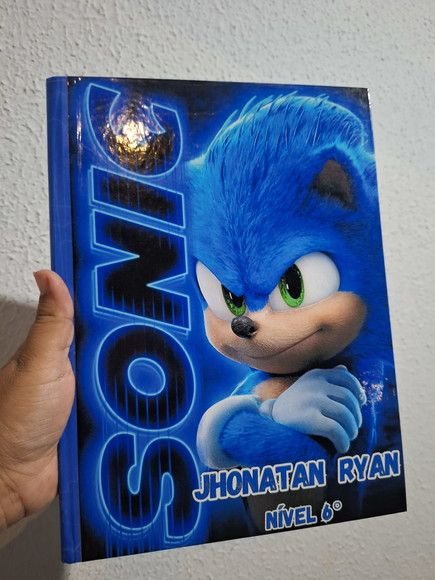
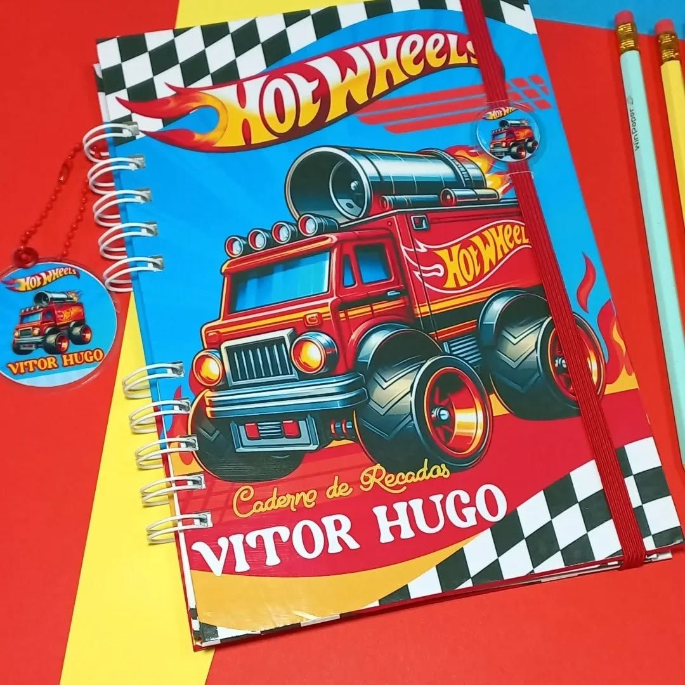
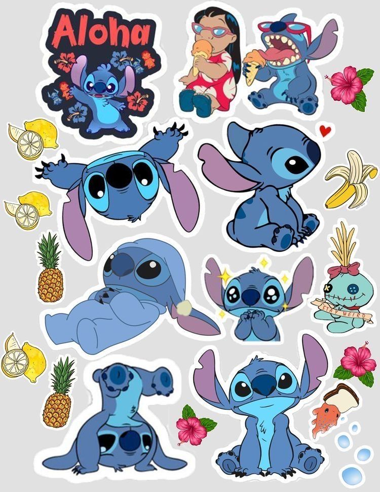
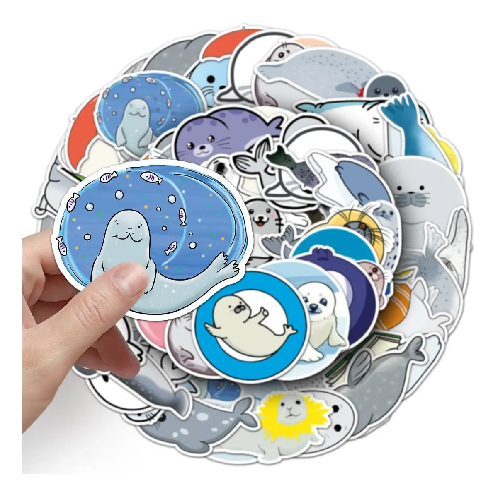
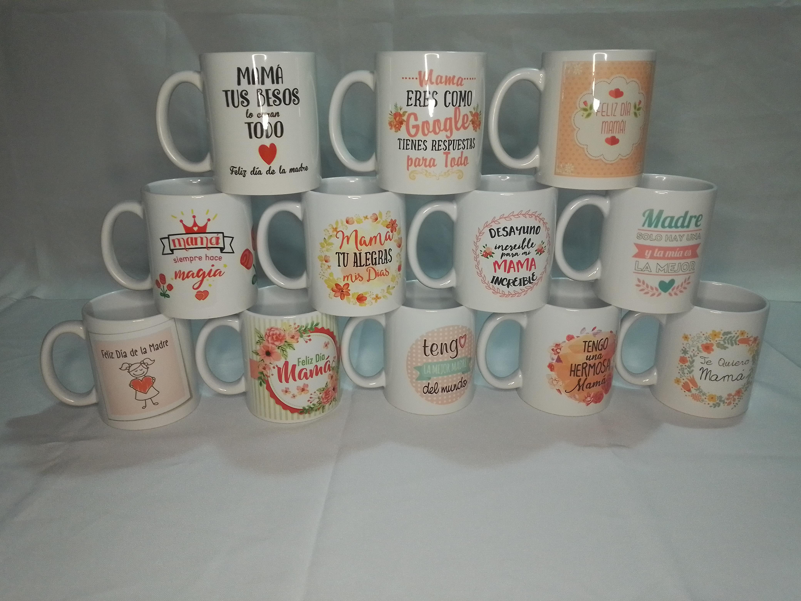
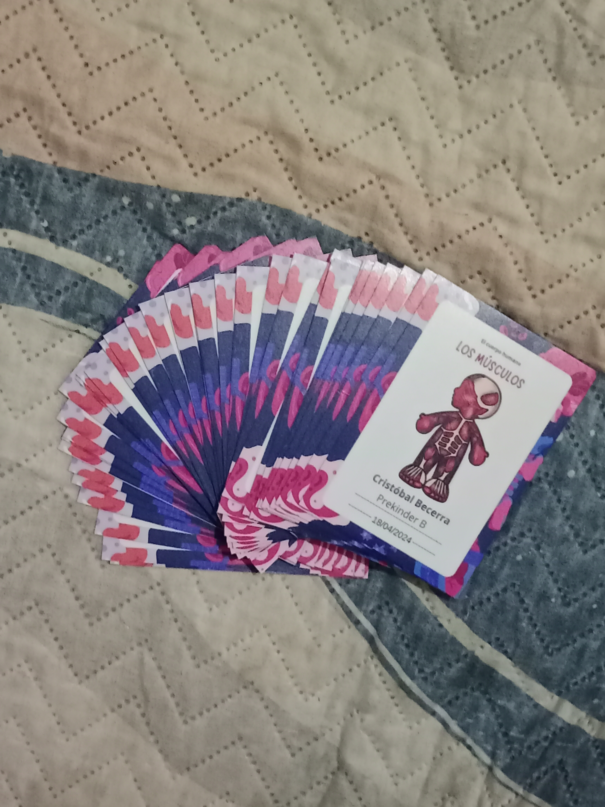

Nuestra Historia
Hace 10 años la vida me enfrentó a una gran pérdida: quedé viuda cuando mis hijos aún eran pequeños. Buscando una manera de ser una mamá presente y, al mismo tiempo, salir adelante, comencé a emprender. Con el paso del tiempo fui descubriendo un talento que no sabía que tenía: el diseño.
Así nació Eco Pilgua —un nombre que representa crecimiento, cariño y resiliencia. Cada producto que realizo está hecho con dedicación, cariño y autenticidad, como si fuera un regalo para mí misma. Hoy, Eco Pilgua es más que un emprendimiento. Es el resultado de convertir el dolor en arte.
Misión
En Eco Pilgua creamos productos personalizados que transforman ideas en piezas únicas llenas de color, emoción y significado. Nuestra misión es acompañar a cada cliente desde la inspiración hasta el resultado final, entregando productos de papelería creativa y sublimación que combinan diseño, funcionalidad y cariño, fomentando la expresión personal y el valor del trabajo hecho a mano.
Visión
Ser una marca reconocida a nivel nacional por nuestra creatividad, rapidez y compromiso con cada persona. Buscamos consolidarnos como un referente en papelería creativa y productos sublimados, impulsando la sostenibilidad, la innovación y el espíritu emprendedor local.
Nuestros Productos y Servicios
En Eco Pilgua realizamos una amplia variedad de productos personalizados, hechos con dedicación y detalle:
-



Agendas, cuadernos y planificadores.
-



Stickers y papelería creativa.
-


Tazones, cojines, pad mouse y cerámicas sublimadas.
-

Diseños exclusivos y desarrollo de ideas personalizadas para regalos, empresas o uso personal.
Testimonios de nuestros clientes
"Le conté mi idea y en minutos ya tenía el diseño, quedó hermoso. ¡Atención rápida y 100 % personalizada!"
— Carolina, cliente frecuente.
"Los productos de Eco Pilgua son preciosos y duraderos. Siempre recibo elogios por los tazones y cuadernos personalizados..."
— Danae, clienta frecuente.
"Excelente atención y compromiso, todo llega a tiempo y con una presentación impecable."
— Cindy M., enfermera.